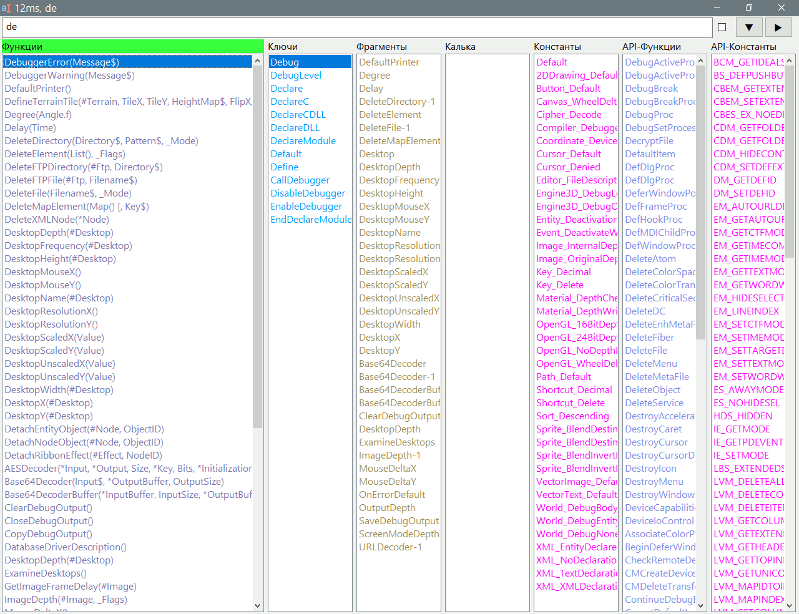

AutoCompletionIDE
Назначение
Автозавершение, вставляет в редактор функции, ключевые слова, константы, фрагменты кода.

Работа с программой
Назначение
Не всегда программист знает наизусть все имена функций, параметры функций (точнее в большинстве не знает, как и для остальных перечисленных моментов), не всегда может набрать их без ошибок (всегда с ошибками), не всегда может быстро набирать с той же скоростью как на родном языке (всегда скорость набора медленная). Здесь пригодится быстрый поиск имён по части слова и вставка в том числе конструкций кода. Просто предлагается список того чем заменить выделенный текст.
Основное
- Выделить слово или установить курсор на слово (редакторы поддерживают автовыделение). Ввести пару букв и выделить их.
- Вызвать горячую клавишу, заранее назначенную. Появится окно программы.
- Выбрать слово и нажать Enter (или правый клик). В режиме левого клика вставка производится кликом. Окно закрывается автоматически или по Esc.
Флажок
Флажок переключает режим поиска между двумя наборами флагов указанных во второй и третьей строке lst-файла. Это позволяет сделать сокращённый поиск с меньшим количеством результатов при поиске от начала слова, или сделать поиск в любом месте выдавая много результатов. Учитывая различные правила имён функций, констант флаги поиска тоже являются индивидуальными для каждого списка.
Интернет
Можно найти в интернете, то что находится в поле ввода. Кликая по спискам элемент списка вставляется в поле ввода. Нажать кнопки со стрелкой вниз чтобы показать меню. Это меню настраивается в ini-файле. Можно добавить сколько угодно пунктов меню.
Кнопка "Найти"
Нажатие тоже что Enter в поле ввода, чтобы найти новый текст.
Правый клик на кнопке вызывает меню с дополнительными полезными пунктами:
- Найденное в буфер обмена - чтобы вставить в редактор и подсветить искомый текст.
- Открыть папку ini - чтобы открыть папку фрагментов и добавить новые.
- Открыть ini - изменить настройки
- Открыть lst - изменить настройки списка
Поле ввода
Поле ввода предназначено, чтобы ввести иное слово или дописать пару букв для более избирательного результата. Нажатием Enter (или кнопки "Найти") выполняется поиск и обновление списков новыми данными. В поле ввода не работают стрелки вправо/влево для перемещения курсора, так как они задействованы как горячие клавиши для переключения между списками, так как наибольший приоритет это выбрать стрелками нужный элемент для вставки.
Быстрые клавиши окна
стрелка вверх/вниз делает выбор по списку.
стрелка вправо/влево выбирает список с подсветкой активного списка.
Enter - вставка выбранного в редактор или поиск введённого в поле ввода.
Esc - выход, закрытие окна без каких либо действий.
Ctrl + Q переключает чекбокс и собственно активирует поиск в новом режиме.
Ctrl + Enter - фокус в поле ввода с возвращением начального выделенного текста в поле.
Ctrl + Shiftl + Enter - показать меню интернета.
Командная строка
Принимаются 2 параметра слово и позиция от начала строки. Слово для поиска, а позиция, чтобы вставить перед словом отступы при вставке фрагментов кода или кальки. При отсутствии параметров захватывается выделенный текст в активном окне, а если ничего не выделено, то используется текст из буфера обмена.
Спецсимволы регулярного выражения
Хотя эти символы ][{}()*+?.\\^$|=<># не используются при поиске, но всё же использование их вызывает ошибку, зависание с использованием процессора на максимуме, по причине неоптимальных регулярных выражений. В связи с этим добавлено предупреждение, вместо запрета, так как при правильном регулярном выражении можно получить ожидаемые результаты.
Списки
7 строк
1. файлы должны быть с расширением lst, рекомендуется UTF-8 с BOM
2. Первые 7 строк зарезервированы для настроек, например:
Константы - имя списка отображаемое над списком
72 - флаги, указывающие поведение поиска, вставки
64 - флаги альтернативного поиска, переключается чекбоксом
FF00FF - цвет текста в списке, сделать такой же как в IDE
#PB_ - префикс, вставляется при вставке
$ - суффикс, вставляется при вставке, может быть "_(" для WinAPI-функций
~ - символ подмены CRLF, позволяет вставить многострочный текст, например в кальках
Флаги
Флаг во второй строке имеет следующие значения:
без флага - не учитывать регистр
без флага - поиск от начала
без флага - поиск как есть по всей строке
1 - учитывать регистр
2 - учитывать регистр, если первый символ в верхнем регистре
4 - поиск в любом месте, иначе от начала
8 - поиск с переводом первой буквы искомого в верхний регистр, т.е. из "компи" в "Компи" и искать с учётом регистра.
16 - режим кальки, поиск по кальке до "|", вставляться будет то что после "|"
32 - фрагменты, он же - снипсеты. Обычный список имён или аббревиатур, а вставка из файла с таким же именем
64 - поиск в 2 прохода, "от начала" потом "не от начала", чтобы релевантное было наверху списка
128 - поиск от начала слова без учётом регистра, предполагается от начала строки или пробела или другого разделителя
Поиск в любом месте на самом деле не включает параметры внутри скобок. То есть если строка содержит параметры Asc(s), то поиск происходит только по имени Asc и не затрагивает (s), аналогично для режима кальки поиск выполняется до вертикальной черты, то есть в "Глобал|Global " поиск происходит по "Глобал", но не происходит по "|Global ", а вставляется "Global "
Поведение для флага 2: если выделен текст, где первая буква в нижнем регистре, то поиск нечувствителен к регистру, а если первая буква в верхнем регистре, то с учётом регистра, т.е. если выделено Ga, то не будут найдены ga, это полезно, так как функции имеют заглавные буквы в частях слов SetActiveGadget.
Поведение для флага 8: если выделен текст, например "компи", то он преобразуется в "Компи" и будет найден с учётом регистра.
Список
Собственно после 6 зарезервированных строк идёт сам список функций, ключевых слов, констант и т.д.
Списки разного вида и имеют разные настройки.
Фрагменты
Список содержит имена фрагментов, это могут быть названия функций или аббревиатуры. Для каждого элемента списка должен быть файл находящийся в папке с таким же именем как и сам файл списка, то есть если файл "Snippets.lst" то имя папки "Snippets", если имя элемента списка "Func", то файл должен быть Snippets\Func.pb.
Калька
Список позволяет искать простые слова, например элемент списка "Глобал|Global ", чтобы не делать их через "фрагменты". Поиск производится по слову "Глобал", а вставляться будет слово "Global". Также можно делать многострочные конструкции указав символ подмены CRLF в 6 строке. Но это лучше сделать для циклов и условий, где пара ключевых слов, сложные конструкции делать через "фрагменты". В этом списке удобно указывать русские (точнее не англоязычные) имена для англоязычных функций, аббревиатуры.
Константы
Здесь ничего особенного, кроме возможности добавлять префикс и суффикс при вставке. Для WinAPI функций (без параметров) можно автоматически добавлять "_()" в конце, чтобы заполнять параметры в скобках.
Функции
Здесь ничего особенного, кроме того, что при поиске не учитывается текст, который идёт после скобки, например в Func(var) поиск будет по имени "Func", но не затрагивать "var", это как в кальке поиск до вертикальной черты, но в отличии от кальки при вставке функций будет вставлены и параметры в скобках.
Ключевые слова
Здесь ничего особенного, то что отображается то и вставляется и поиск по всей строке. Здесь могут быть элементарные условные операторы, имена функций. Но это не является особым списком, т.е. если в элементе появится открывающая скобка или вертикальная черта, то поиск будет выполнятся до этого разделительного символа, который обычно не используется в именах функций, ключевых словах и константах.
Сортировка списка
Изначально элементы сортированы по алфавиту. Если вы замечаете, что необходимо много нажатий стрелки вниз/влево для сдвига курсора, чтобы выбрать часто используемый элемент, то можно поменять местами списки и поменять местами элементы в списке, то есть сделать часто используемое наверху списка, тогда вставка будет мгновенной. Например очень часто требуется вставить MessageRequester() или Debug с разными вариантами вывода, переменных, чисел, текста, или часто используемые фрагменты, например GUI, чтение файла, в ключевых словах часто используется конструкция "If" и т.д. Чтобы выбрать достаточно ввести "me", получаем первым в списке "MemorySize", находим его в lst-файле и над ним вставляем "MessageRequester", теперь при вызове поиска "me" необходимая функция будет первой и достаточно нажать Enter ничего не выбирая.
Цвета
Можно использовать следующие цвета в BGR
Для белой темы:
AB767A
FF9900
528DA0
FF00FF
E68A7D
|
Для чёрной темы:
DBA6AA
FF9900
72ADC0
DE98D9
E68A7D
FF66FF |
Настройка
ini-файл
[set] ; секция настроек
paste=1 ; автоматическая вставка
strpaste=xdotool key ctrl+v ; строка используемая для эмуляции клавиш вставки из буфера обмена (только в Linux)
strcopy=xdotool key ctrl+c ; строка используемая для эмуляции клавиш копирования в буфера обмена (только в Linux)
Width=880 ; ширина окна, -1 - на весь экран
Height=500 ; высота окна, -1 - на весь экран
WinClose=0 ; закрывать окно при потере фокуса
RightClick=1 ; вставка правым кликом также позволяет стрелками выбирать пункт и Enter. Иначе только левым кликом
SpaceTab=0 ; если у вас пробелы вместо отступа, то укажите 1
FullScreen=1 ; развернуть окно на весь экран после запуска
ColorAct=F4FFF4 ; цвет активного списка, для чёрной темы Linux цвет 99EE99
ColorNotAct=FFFFFF ; цвет неактивного списка, для чёрной темы Linux цвет AAAAAA
TitleIDE=PureBasic ; текст в заголовке окна для идентификации окна (только в Windows)
ClassIDE=WindowClass_2 ; класс окна для точной идентификации окна (только в Windows)
ClassEdit=Scintilla ; класс элемента редактирования внутри окна, то есть элемент в который будет производится вставка (только в Windows)
Ext=pb ; расширение файлов для фрагментов
[link] ; секция ссылок для меню поиска в интернете
google=https://www.google.com/search?source=hp&q=%s&oq=%s
google_domain_fr=https://www.google.com/search?source=hp&q=%s+site%3Apurebasic.fr&oq=%s+site%3Apurebasic.fr
yandex=https://yandex.ru/search/?text=%s
yandex_domain_fr=https://yandex.ru/search/?text=%s+site%3Apurebasic.fr
Здесь %s это то что вставлено для поиска, то есть в любой ссылке поиска нужно заменить искомое на %s и ссылка будет правильно сформирована.
Если ini отсутствует, то настройки по умолчанию, для окна PureBasic.
Настройки редактора
PureBasic
в ini-файле по умолчанию, т.е.
TitleIDE=PureBasic
ClassIDE=WindowClass_2
ClassEdit=Scintilla
Добавить инструмент в "Инструменты → Настройка инструментов... → Новый". Указать путь, параметры:
-w:%WORD %CURSOR
Notepad++
TitleIDE=Notepad++
ClassIDE=Notepad++
ClassEdit=Scintilla
В файле "AppData\Roaming\Notepad++\shortcuts.xml", то есть Alt+F2
<Command name="AutoCompletionIDE" Ctrl="no" Alt="yes" Shift="no" Key="113">"$(NPP_DIRECTORY)\Tools\AutoCompletionIDE.exe" "-w:$(CURRENT_WORD)"</Command>
AkelPad
TitleIDE=AkelPad
ClassIDE=AkelPad4
ClassEdit=AkelEditW (или RichEdit20)
В меню добавить строку:
"AutoCompletionIDE" Exec(`"%a\AkelFiles\Tools\AutoCompletionIDE\AutoCompletionIDE.exe"`, "-w:%d") Icon("%a\AkelFiles\Tools\AutoCompletionIDE\AutoCompletionIDE.exe")
Geany
открыть "Настройки → Инструменты → Контекстное действие" и в поле ввести команду:
AutoCompletionIDE -w:%s
где %s - выделенный текст. Открывается пункт в контекстном меню, последний (или в "Правка"). Также в настройках горячих клавиш: "Правка → Настройки → Сочетание клавиш → Редактор → Контекстное действие" назначить например Alt+1, в файле /home/user/.config/geany/keybindings.conf появится запись popup_contextaction=<Alt>1, то есть можно просто добавить эту запись в файл перед запуском Geany.